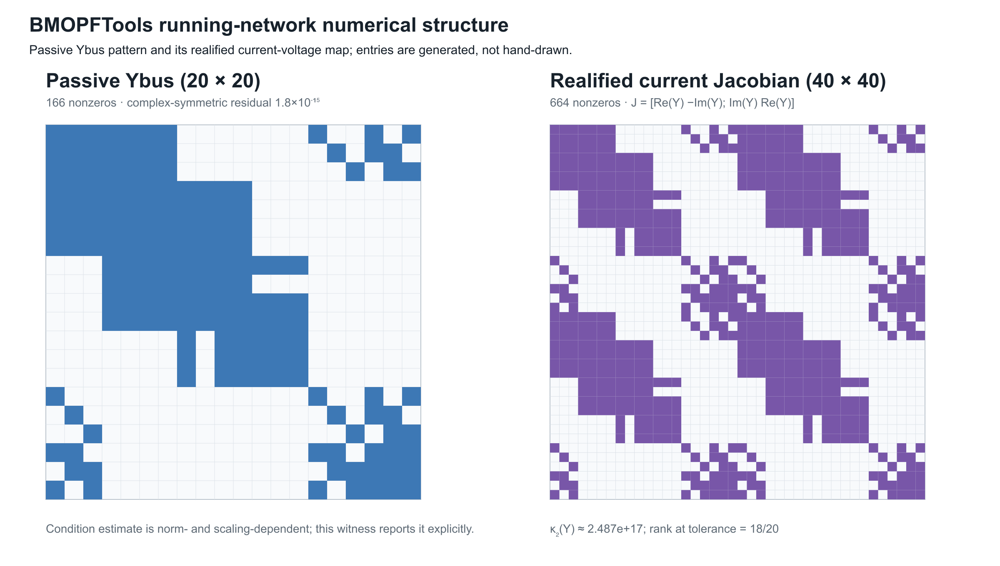
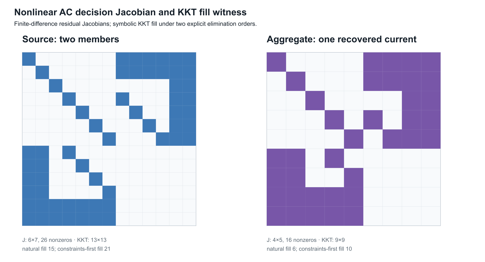

Numerical consequences of representation and reduction
Page status: generated structural, linearized, symbolic KKT, and package-level solver-diagnostics crosswalk witnesses; solver-internal nonlinear exports remain future work.
A graph choice is also a numerical choice
Two representations can describe the same declared electrical behaviour while producing very different numerical problems. A quotient may reduce the number of variables but worsen scaling; a Kron reduction may preserve a boundary relation but introduce dense couplings; a factor model may expose physical structure while a bus–branch compiler produces a smaller, more familiar Jacobian. These are computational consequences, not afterthoughts.
The relevant comparison is therefore not only
\[\text{same terminal map?}\]
but also
\[\text{same feasible observations, with what conditioning, sparsity, and recovery cost?}\]
The statements below concern a declared operating point, coordinate system, and solver tolerance. They do not claim that one representation is uniformly better.
Electrical loss is power absorbed by a device model. Information loss is a failure of recovery under a representation map. An optimization or ML loss is an objective function. The shared word does not make these quantities comparable, and reducing one need not reduce either of the others.
Scaling and conditioning
Let a linearized or linear subproblem be
\[\mathbf A x = b.\]
Changing units or terminal coordinates is represented by nonsingular maps $x=\mathbf D_x\widetilde x$ and $b=\mathbf D_b\widetilde b$. The coefficient matrix becomes
\[\widetilde{\mathbf A} = \mathbf D_b^{-1}\mathbf A\mathbf D_x.\]
The solution set is unchanged, but the numerical condition number can change:
\[\kappa(\widetilde{\mathbf A}) = \|\mathbf D_b^{-1}\mathbf A\mathbf D_x\| \|\mathbf D_x^{-1}\mathbf A^{-1}\mathbf D_b\|.\]
This is why per-unit coordinates are a numerical convention as well as a reporting convention. A declared base scales voltage, current, power, and impedance together; it does not erase poor physical conditioning, singular topology, or an omitted conductor. A coordinate transformation is safe to call an exact rewrite only when its inverse and its power-dual action are retained, as in the coordinate-transformation chapter.
A dimensionless or per-unit matrix is not automatically well conditioned. The conditioning claim must name the norm, the bases, and the operating domain. A small residual in badly scaled coordinates can coexist with a large error in a physical voltage, current, or decision.
For a computed solution $\widehat x$ define the residual $r=b-\mathbf A\widehat x$. A backward-error measure is, for example,
\[\eta(\widehat x) = \frac{\|r\|}{\|\mathbf A\|\,\|\widehat x\|+\|b\|}.\]
Forward error bounds require additional assumptions. In a nonsingular linear problem, a standard normwise estimate has the form
\[\frac{\|\widehat x-x\|}{\|x\|} \lesssim \kappa(\mathbf A)\,\eta(\widehat x),\]
up to higher-order terms and the chosen norm. Certificates should therefore store both a residual/backward-error quantity and a conditioning estimate, not just a solver termination flag.
Jacobians: physical topology is not matrix sparsity
For a nonlinear decision model $F(y,u)=0$, Newton or interior-point methods use a Jacobian such as
\[\mathbf J = \frac{\partial F}{\partial y}.\]
The physical graph predicts some nonzeros, but the Jacobian graph is a graph of variable–equation dependence. A single multi-terminal factor can create a dense block between all of its ports. A nominal-$\pi$ element can couple endpoint voltages through series terms and endpoint currents through shunts. Constraint rows for limits, controls, and recovery variables add edges that have no corresponding physical line. Conversely, a physical asset may be absent from a particular Jacobian block when its state is fixed or its equation has been eliminated.
Write $G_phys$ for a chosen physical incidence graph and $G_J$ for the bipartite Jacobian graph. In general there is no equality $G_phys=G_J$. The useful statement is a declared dependency map
\[\delta:\; (\text{factor},\text{terminal},\text{constraint}) \longmapsto (\text{equation rows},\text{variables}),\]
from which $G_J$ is generated. This map is the numerical analogue of source provenance: it explains why a fill-in or a dense block exists.
The five-bus structural witness makes the distinction concrete. Its source has seven line identities but only six edges after simple projection because $q$ and $r$ are parallel. Eliminating $j$ then adds the $i$–$l$ fill edge to the projected pattern. The fill argument and the dependency argument are shown separately so that a reader does not confuse a Schur-complement edge with a numerical derivative. The conceptual pair now appears in the formulation and lowering chapter; this chapter retains the executed witnesses and their fixture-specific counts.
The data and checks are recorded in experiments/generated/numerical-structure-witness.json; the renderer is experiments/generate_numerical_structure_views.py. This separation is intentional: both structural views can be checked without pretending that either is a solver-exported Jacobian.
Fill is not inevitable. The two-level topology chapter proves a positive structural case: dense two-terminal conductor stamps over a bus-level tree form a chordal scalar-support graph, and eliminating leaf-bus coordinate blocks inward is a perfect elimination order with zero symbolic fill. The warning here concerns arbitrary orderings, meshes, reductions, and factor libraries; it should not hide structure that a declared model makes exploitable.
The numerical witness now carries a crosswalk to experiments/generated/five-bus-typed-kron-witness.json. That crosswalk uses the non-pendant $\ell$ elimination, whose fill edges are $j-m$ and $k-m$, and records the small boundary residual together with the recovered $u$-branch limit observation. This ties the Schur-complement example to the numerical-structure discussion without conflating fill edges with physical assets or solver-private factorization output.
A pinned numerical export
The running fixture provides a second, numerical witness through BMOPFTools' passive and constant-$Z$ linearized $Y$-bus exporters. In the exporter's node order, the passive matrix has 20 rows and 166 nonzeros. The constant-$Z$ linearized matrix agrees with that passive matrix for this fixture. Realifying the complex current relation gives a 40-by-40 real matrix with 664 nonzeros. This is a coordinate embedding, not a promise that every complex invariant is preserved: the complex Ybus is transpose-symmetric to numerical precision, whereas the realified current-Jacobian embedding has a large transpose residual. That residual is expected for a nonzero imaginary part: the block matrix $\mathcal R(Y)$ with diagonal blocks $\Re Y$ and off-diagonal blocks $-\Im Y$ and $\Im Y$ is generally not symmetric. This is not a round-off failure. Realification preserves the coordinate support and the current relation, but symmetry claims must be stated in the representation in which they are checked (the witness residual is approximately $448.79$):
\[\begin{bmatrix}\Re I\\ \Im I\end{bmatrix} = \begin{bmatrix} \Re Y&-\Im Y\\ \Im Y& \Re Y \end{bmatrix} \begin{bmatrix}\Re V\\ \Im V\end{bmatrix}.\]

The ordinary 2-norm condition estimates are approximately $2.49\times10^{17}$ (unscaled) and $2.36\times10^{16}$ (after simple row/column equilibration). Because both matrices are numerically rank deficient (rank 18 of 20 at the witness tolerance), those finite values should not be read as meaningful condition numbers: they are dominated by singular values below the modelling tolerance. The witness therefore also reports the rank-aware effective estimates $\kappa_{\mathrm{eff}}=\sigma_1/\sigma_{18}$ and its equilibrated counterpart. These are diagnostic, not universal constants: they depend on units, node ordering, norm, rank tolerance, and the chosen fixture. For this export the effective estimates are approximately $6.50\times10^8$ and $1.13\times10^7$ after equilibration. A solver must account for reference and grounding structure rather than treating any of these numbers as a graph invariant.
The complete export, including node order, nonzero entries, checks, and the linearization convention, is recorded in experiments/generated/ybus-jacobian-witness.json. The scripts experiments/run_ybus_jacobian_witness.jl and experiments/render_ybus_jacobian_view.py regenerate it. This is a pinned linear current/Jacobian witness; it is not yet a nonlinear OPF KKT Jacobian or an independent-solver comparison.
Nonlinear decision Jacobian and KKT fill
The next witness adds the nonlinear term that makes the parallel-line warning decision relevant. For a fixed complex endpoint voltage $U$ and member currents $I_1,I_2$, the residual includes
\[S(U,I_1,I_2)-\alpha S_0 = U(I_1+I_2)^*-\alpha S_0.\]
The source formulation retains two explicit current laws and two current vectors. The aggregate formulation replaces them by one summed current law. At the recorded operating point both residuals are exactly zero, but their finite-difference Jacobians and KKT patterns differ:
For avoidance of a common counting error, the source witness has two complex member-current coordinates, represented as four real variables, in addition to the three retained real coordinates. It therefore has seven real source variables; the aggregate witness has five real variables. The reduction removes two real variables (one complex current), not eight. The source KKT system has 13 rows and columns because it adds six residual/constraint multipliers; that KKT dimension is a different count from the number of primal variables.

| formulation | residual Jacobian | KKT dimension | natural fill | constraints-first fill |
|---|---|---|---|---|
| two explicit members | $6\times7$ (26 nonzeros) | 13 | 15 | 21 |
| summed member current | $4\times5$ (16 nonzeros) | 9 | 6 | 10 |
The fill counts are symbolic graph counts, not floating-point factorization times. They show why an ordering is part of a numerical certificate: the same KKT graph has different fill under different elimination orders. The source and aggregate models also have different graphs, so a smaller KKT system does not by itself establish decision equivalence.
The complete finite-difference and symbolic-fill artifact is experiments/generated/nonlinear-kkt-witness.json, regenerated by experiments/run_nonlinear_kkt_witness.jl and experiments/render_nonlinear_kkt_view.py. It is deliberately labelled a nonlinear decision witness rather than a solver-internal Ipopt KKT export. A package-level crosswalk now binds it to the BMOPFTools Ybus witness, while actual solver-internal factorization diagnostics remain a separate boundary.
Package-level diagnostics crosswalk
The generated solver-diagnostics-crosswalk.json composes the two witnesses without pretending that either is a production solver export. It retains the physical node/terminal order, the BMOPFTools passive and constant-$Z$ Ybus, the realified current Jacobian, the finite-difference nonlinear residual Jacobian, and the symbolic KKT graph under two declared orders. In the source formulation, for example, the natural and constraints-first orders produce different fill counts, so the crosswalk records ordering as part of the diagnostic identity.
The crosswalk also exercises the public BMOPFTools.opf_checked_kkt_factorization callback on a staged OPF context. The probe accepts a regular matrix and rejects a near-singular one. This is a checked callback boundary. A minimal parameterized OPF now passes that callback through DiffOpt: the forward sensitivity agrees with a central finite difference to the recorded tolerance, and the KKT diagnostic is accepted. The adapter also captures the matrix passed to the callback, recording its dimension and nonzero count, alongside the JuMP variable and constraint order used to account for its rows and columns. Four additional callback rows remain outside that declared JuMP block, so they are retained as an explicit DiffOpt/solver-internal boundary rather than silently assigned a physical label. The crosswalk still records solver_internal_kkt_export = false because solver-provided row labels, scaling, linear-solver choice, pivot or inertia data, and factorization statistics are not yet exported as a source/target comparison.
The same witness records BMOPFTools' differentiability report: inequality counts, active, near-active, weakly-active, and violated labels, minimum inactive slack, and qualifications. In this deliberately unconstrained fixture the inequality count is zero. The report's ready flag is state provenance for the selected local solve, not a proof of LICQ, strict complementarity, second-order sufficiency, global optimality, or branch stability.
The crosswalk now also builds a regular JuMP mirror and records its native affine/quadratic variable-support count alongside a separate JuMP.NLPEvaluator view. This gives an executable constraint-row/nonzero summary for the model-level derivative graph (23 supported variable entries in the current 19-row fixture), while leaving native_nlp_export_is_solver_internal = false: it is not Ipopt's private KKT ordering, pivoting, inertia, or factorization export.
For a deliberately narrow parallel-line fixture, the crosswalk also compares a two-member source against a single 0.25 Ω equivalent member. The tested voltage sensitivity is preserved, while the captured KKT matrix grows for the explicit source. The native JuMP support count changes as well, so the distinction is visible before any solver-private factorization. This is evidence that an exact electrical scalar equivalent can still change solver structure; it is not a general AC or multiconductor reduction certificate.
Numerical evidence boundary
The three numerical artifacts answer different questions and should not be collapsed into one solver claim:
| Artifact | What is measured | What it does not establish |
|---|---|---|
| structural witness | incidence, dependency, and symbolic fill edges | numerical derivative values or solver performance |
Ybus/Jacobian witness | pinned passive and constant-$Z$ matrix patterns, rank, and conditioning diagnostics | nonlinear OPF sensitivities, active-set stability, or factorization timings |
| nonlinear KKT witness | finite-difference residual structure and symbolic fill under two declared orders | Ipopt's internal derivative graph, linear-solver pivoting, or global optimality |
| solver-diagnostics crosswalk | shared node/order provenance, a checked-KKT callback probe, a DiffOpt sensitivity cross-check, and JuMP ordering metadata | an exported source/target solver KKT comparison, solver-native row labels, or ordering/factorization metadata |
An actual solver diagnostic would need to bind the exported derivative rows and columns to the source/target variable order, record scaling and tolerances, identify the linear solver and ordering, and retain the factorization or inertia report. Until that export exists, the chapter's KKT language is a symbolic comparison, not an implementation claim about a production solver.
Elimination and fill-in
Partition a sparse matrix by retained variables $B$ and eliminated variables $I$. The Schur complement is
\[\mathbf S = \mathbf A_{BB} -\mathbf A_{BI}\mathbf A_{II}^{-1}\mathbf A_{IB}.\]
Even when $\mathbf A$ is sparse, $\mathbf S$ can be dense on the neighbours of $I$. In the symbolic graph, eliminating a vertex connects its remaining neighbours into a clique. The extra nonzeros are fill-in. The same mechanism appears in Kron reduction: preserving a boundary relation does not preserve sparsity, asset identity, or the cost of a subsequent solve.
The order of elimination matters. For a fixed matrix, two orders can have the same exact Schur complement but different intermediate fill, memory use, and factorization time. A certificate that reports a reduction should therefore record at least:
| numerical field | required meaning |
|---|---|
ordering | symbolic elimination or factorization order |
nnz_input, nnz_factor, nnz_fill | structural nonzero counts under that order |
rank_guard | rank/invertibility test for eliminated blocks |
conditioning | estimate for the retained and eliminated solves |
recovery_cost | work/storage needed to reconstruct omitted variables |
These fields are properties of a compiled numerical problem, not of a simple graph in isolation.
Solver behaviour and decision margins
For a constrained decision problem, solver behaviour is part of the evidence but not the preservation theorem. A reduced model may converge faster because it has fewer variables, or slower because it has denser and more ill-conditioned blocks. A feasible point can also be numerically ambiguous when a constraint margin is comparable with the estimated forward error.
For a scalar inequality $g_k(y,u)\le 0$, define the signed margin
\[m_k = -g_k(\widehat y,\widehat u).\]
If $e_k$ is a declared bound or estimate for the error in that constraint, classify the result as:
\[\begin{array}{ll} \text{certified feasible} & m_k>e_k,\\ \text{numerically ambiguous} & |m_k|\le e_k,\\ \text{certified violated} & m_k<-e_k. \end{array}\]
This is deliberately stronger than reporting $g_k\le 0$ at printed precision. The same classification applies to decision comparisons: if two objectives or tap choices differ by less than the propagated numerical error, the certificate should not claim a unique optimum.
A reduction that preserves a boundary voltage to tolerance may still change the active member limit, the selected switch state, or the winning discrete decision. Record the decision margin and the recovery error for every claimed decision-preservation result.
What a transformation certificate should expose
The numerical fields extend the general preservation contract:
\[\mathcal N = ( \text{coordinates},\text{scaling},\kappa,\eta,\text{dependency graph}, \text{ordering},\text{fill},\text{recovery cost},\text{decision margins} ).\]
An exact electrical map may therefore be computationally unattractive, while an approximate map may be useful if its error and decision domain are explicit. The running network's six generated views should eventually carry this record alongside their source maps; the current fixture records the source maps and solver outcomes but does not yet claim a complete cross-solver conditioning study.
Scope and open work
This chapter gives definitions and reporting requirements, not a universal solver benchmark. The next executable tranche should compare the running multiconductor network and its five-bus quotient under a pinned ordering and coordinate convention, report $Y$/Jacobian sparsity and fill-in, and test whether recovered current and rating margins remain decisive after reduction.